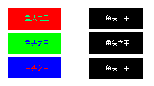

| 命令名称 | Filter_CheckPoints 筛选色点 |
| 命令功能 | (针对彩色图像处理)指定色点数量的颜色为黑色 |
| 语法格式 | TURING.Filter_CheckPoints(Kind, Num, isMax) |
| 参数说明 |
Kind：整数型，颜色种类数量，默认1 Num：整数型，指定颜色点数量，默认0 isMax：布尔型，是否指定最多数量的颜色，否则为最少数量，默认True |
| 返回值 | 无 |
| 按键精灵 |
复制代码
'获取屏幕图像数据 Call TURING.Pixel_FromScreen(0, 0, 100, 100) '指定颜色种类为1的最多颜色为黑色 Call TURING.Filter_CheckPoints(1) '显示图像预览（会阻塞） Call TURING.Pixel_Preview() |
| 滤镜效果 |  |